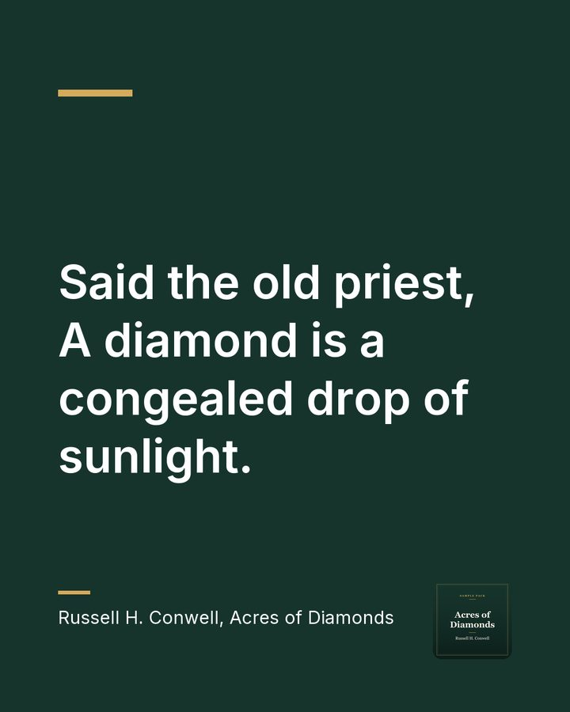

Every pack starts with three clips like this one.
He sold the farm sitting on oil
Talk Pack, $79 one time
For one recording: 3 captioned clips, 3 quote graphics, a 150 word summary, five takeaways with timestamps and a caption for every piece.
One recording, no subscription.
Request the Talk Pack, $79 one timeThis is a sample, so the button opens our request form with the Talk Pack chosen.
Suggested caption:
He learned everything about oil, then sold the one farm that held it. Russell Conwell asks us to look at what is already in our hands. #AcresOfDiamonds #Opportunity
Audio: Acres of Diamonds by Russell H. Conwell (1843-1925), read by a LibriVox volunteer, public domain. Cut and captioned by Already Made. LibriVox and its volunteers do not endorse this studio.
Two more from the same talk
Each pack has three clips, chosen so each one stands on its own.
Your diamonds may be in your own backyard
Preview. The full clip comes with your pack.
Suggested caption: Ali Hafed went looking far away, and the riches were under his own wheat fields. A good reminder to dig where you stand. #AcresOfDiamonds #Perspective
You have acres of diamonds where you live
Preview. The full clip comes with your pack.
Suggested caption: Conwell told his Philadelphia audience that what they were looking for was already around them. Where might that be true for you? #AcresOfDiamonds #Opportunity
Before this page was made, every clip passed our checks: its captions match our transcript of the recording word for word, the captions keep time with the speech, and the sound is set to an even level. Each quote graphic was checked word for word against the same transcript. We never post anything. Your team approves each piece and posts it.
Summary
Russell H. Conwell tells the story of Ali Hafed, a contented Persian farmer who hears about diamonds from a priest, sells his farm, and wanders the world in search of them. He dies in poverty, while the man who bought his farm finds the Golconda diamond mine in the garden stream. Conwell adds three more stories of people who left behind great fortunes without knowing it: a California rancher who sold land that held gold, a Pennsylvania farmer who sold land over an oil flow he had been damming up, and a Massachusetts mining expert who sold a homestead with a block of silver in its stone wall. He admits that his listeners, and he himself, have made the same mistake. He ends by telling his Philadelphia audience that they have acres of diamonds right where they live.
Five takeaways
Each one comes from what the speaker said, with its timestamp:
- Ali Hafed became poor because he was discontented and feared he was poor, even though he had not lost everything. (3:54)
- The California rancher could have had the gold simply by taking it from his own land. (10:01)
- The Pennsylvania farmer learned everything about oil and still sold the oil-bearing land for $833. (14:11)
- We laugh at those who missed their fortune, but we have made the same mistake and they have the better right to laugh at us. (18:51)
- Conwell tells his audience that they have acres of diamonds in Philadelphia right where they live. (20:02)
Three quote graphics

Suggested caption: Conwell's message to his own city still fits ours: the opportunity may be right where we live. #AcresOfDiamonds

Suggested caption: Contentment and wealth, tied together in one line from the story of Ali Hafed. A thought worth carrying into the week.

Suggested caption: A priest's simple picture of what a diamond really is, from the story that gives this talk its name.
What you receive
- 3 vertical clips with captions, ready for Reels, Shorts, TikTok and LinkedIn
- 3 quote graphics, sized for Instagram, Facebook and LinkedIn
- A 150 word summary of the talk
- Five takeaways, each one taken from what the speaker said, with its timestamp
- A ready-to-paste caption for every clip and every quote graphic
How we get your talk
You send us one recording of the talk, audio or video, through an upload link we give you or a share link of your own. Your preview arrives within 5 business days, and the files arrive within 24 hours of purchase.
About this page
This is a public sample page. A real preview page is unlisted: only people with the link can open it, and we send the link only to the organization it was made for. A real page also shows the date we delete it and how to have it deleted sooner.